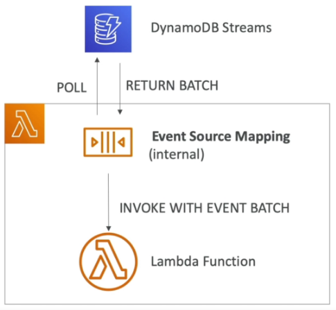

DynamoDB¶
Overview¶
- NoSQL, serverless database.
- Fully managed with auto-scaling.
- Doesn't support join.
- All data needed for a query should be in one row.
- Don't perform aggregations like "SUM".
- Multi-AZ replication.
- Very high capacity.
- Auto-scales, low cost.
Tables¶
- Each table has a primary key.
- Supports an infinite number of items.
- Table attributes can be nested and added over time.
- Maximum size of an item is 400KB.
- Uses provisioned read/write capacity units.
Data Types¶
- String, Number, Binary, Boolean, Null.
- List, Map, Set.
Primary Keys¶
Partition Key¶
- Unique for each item.
- Must be unique so that it can be distributed.
Partition Key + Sort Key¶
- Combination must be unique.
- Data is grouped by partition key, then sorted by sort key.
Throughput¶
- RCU/WCU can be auto-scaled.
- "Burst Credit" allows throughput to be temporarily exceeded.
- A
ProvisionedThroughputExceptionwill be thrown if burst credit is exceeded. Fix via exponential back-off. - A
ProvisionedThroughputExceededExceptionwill be thrown if RCU/WCU is exceeded. Could be caused by hot keys, hot partitions of very large items. Fix via exponential back-off, distributing partition keys better, or use DynamoDB Accelerator. - RCU/WCU is spread evenly between partitions.
- Round up to nearest KB when calculating RCU/WCU.
- Eventually consistent reads may return old data due to replication delays. Can use
ConsistentReadonGetItem,QueryandScan. - Strongly consistent reads will return the latest data.
-
Calculating RCU/WCU:
Operation Reads/Second Item Size Eventually Consistent Read 2 4KB Strongly Consistent Read 1 4KB Write 1 1KB
Partitions¶
- Data is divided into partitions.
- Partition keys are hashed to determine which partition they go to.
-
Calculating the number of partions:
How Method By Capacity (total RCU/3000) + (total WCU/1000) By Size Total Size/10GB -
Total number of partitions is the max of capacity and size.
Reading Data¶
GetItemto read based on a primary key (hash or hash range).ProjectionExpressioncan be used to limit the item attributes that are returned.BatchGetItemto retrieve upto 100 items (16MB data).
Writing Data¶
PutItemto create or replace an item.UpdateItemto update an item. Can use an atomic counter to consistently increment/decrement a value.BatchWriteItemto write up to 25PutItemorDeleteItemin one call. Reduces latency, and cost. Maximum batch size is 16MB. Part of the batch can fail, and the failed items would have to be retried.
Conditional Writes¶
- Accept a write/update only if conditions are met. Good for concurrent acess.
Deleting Data¶
DeleteItemto delete a row. Can do conditional deletes.DeleteTableto delete an entire table.
Querying Data¶
Queryreturns items based on the partion key and (optional) sort key.- Use
FilterExpressionto perform client-side filtering. - Up to 1MB of data.
- Supports limit/pagination.
- Can query a table, local secondary index, or a global secondary index.
- Use
Scanscans the whole table, then filters data.- Inefficient.
- Max 1MB of data.
- Supports limit/pagination.
- Parallel scan will scan faster.
- Supports
ProjectionExpressionandFilterExpression.
Indexes¶
Local Secondary Index¶
- Range key for the table.
- Bound to the partition key.
- Must be defined when the table is created.
- Up to five LSI per table.
- Sort key must be string, number or binary attribute.
Global Secondary Index (GSI)¶
- Can be added/modified on the fly.
- Speeds up queries on non-key attributes.
- Uses partition key + sort key.
- Generates a new table that item attributes are projected on to using the
INCLUDE,ALLorKEYS_ONLYparameters. - Have to define a WCU/RCU for the GSI.
- If GSI writes are throttled, it will throttle the main table.
Concurrency¶
- DynamoDB uses optimistic locking.
- The first concurrent request to modify an object "wins". The remaining concurrent requests will fail.
DynamoDB Accelerator (DAX)¶
- Caching techology. Effectively transparent to the client.
- Writes go through DAX, which allows for sub-millisecond latency for cached reads and queries.
- Solves the hot key problem to reducing the amount of times the key is read.
- Default TTL is 5mins.
- Up to 10 nodes in a cluster.
- Multi AZ.
- Supports encryption at rest.
- For aggregation results, use ElastiCache.
DynamoDB Streams¶
- Changes to DynamoDB can be sent to a DynamoDB stream, to be read by Lambda, EC2 instances etc.
- Good for reacting to changes in realtime, analytics, creating derived tables/views, inserting into elasticsearch.
- Supports cross-region replication.
- 24hr data retention (can't be changed).
- Chose what data to send to the stream:
KEYS_ONLYto send just the primary key.NEW_IMAGEto send the modified item.OLD_IMAGEto send the unmodified item.NEW_AND_OLD_IMAGESto send the modified, and unmodified items.
- Streams consist of shards, that are fully managed by AWS.
- Only new records will be added to a stream.
DynamoDB Streams + Lambda¶
- Have to define an
Event Source Mappingfor Lambda to read from a stream. - Create a trigger from DynamoDB Streams that executes a Lambda function.
- Lambda function is invoked asynchronously.

Time to Live (TTL)¶
- Automatically delete an item after an expiry date/time.
- No cost, doesn't use WCU/RCU.
- Reduces storage capacity, helps adhere to regulatory requirements re data retention.
- Enabled per row (select which attribute represents the epoch timestamp).
- Expired items usually deleted within 48hrs, and are also delete from any indexes (GSI/LSI).
- Could use DynamoDB Streams to help recover expired items.
DynamoDB CLI¶
--project-expressionto specify a list of attributes to retrieve from the table.--filter-expressionto filter the results. The filter expression filter is defined using--expression-attribute-values.--page-sizeto limit the number of items per page. Happens in the background, the full set of results are returned, it just consumes more RCU by running the query multiple times.--max-itemsto enable pagination and set the maximum number of results to be returned. ReturnsNextToken.--starting-tokento read the next page.
Transactions¶
- Execute CRUD operations across multiple tables at the same time.
- All or nothing operation. If any operation fails, the entire transaction fails.
- Uses twice the RCU/WCU. eg: 3 writes/sec @ 5KB = (5KB/1KB) * 2 * 3 = 30WCU. 3 reads/sec @ 5KB = (5KB/4KB) * 2 * 3 = 12RCU.
TransactWriteItemsto write.TransactGetItemsto read.
DynamoDB as a Session State Cache¶
- Common use case.
- Use ElastiCache when it's ok to store the cache in memory. Use DynamoDB when serveless/auto scaling is needed.
- Use EFS to store session cache when session state needs to be shared across multiple EC2 instances.
- Use EBS/Instance store for local caching (not shared).
Write Sharding¶
- Add a random/calculated suffix to the partition keys to scale writes across multiple shards.
Write Types¶
| Type | Description |
|---|---|
| Concurrent | The last concurrent write wins. |
| Conditional | Only update the item based on a condition (eg: only update if the items value = \ |
| Atomic | Uses an atomic counter to allow concurrent writes to increment/decrement an items attribute. |
| Batch | Update many items at the same time. |
DynamoDB Patterns for S3¶
Large Objects Pattern¶
- Send the large data to S3.
- Insert metadata into DynamoDB that points to the location of the S3 object.
Indexing S3 Object Metadata¶
- Write to S3.
- Trigger a lambda function, and write metadata about the S3 object into DynamoDB.
- Now you can query DynamoDB for object metadata.
Operations¶
- Fastest way to clean up a table is to use
DeleteTable, then re-create it. - Copy a table using AWS DataPipeline (via EMR), which will export a table to S3, then load the S3 object into a new DynamoDB table. Can also copy by running a backup, then restoring it into a new table, or scanning the entire table and writing the items into the new one.
Security¶
- Use VPC endpoints to access DynamoDB without going over the internet.
- Use IAM for access control.
- Encryption at rest using KMS.
- Encryption in transit using SSL/TLS.
- There's a point-in-time Backup & Restore feature.
- Global tables are multi-region, high performance and fully replicated.
- use Amazon Database Migration Service (DMS) to migrate databases to DynamoDB.
- DynamoDB can be run locally.
- Use Web Identity Federation (WAF) to get temporary credentials that can be used by web/mobile
apps to directly talk to DynamoDB. Use a condition on the IAM policy to limit what tables the
user can access.
LeadingKeysset row-level access limits.Attributesto limit what attributes the user is allowed to see.
Last update: June 30, 2021